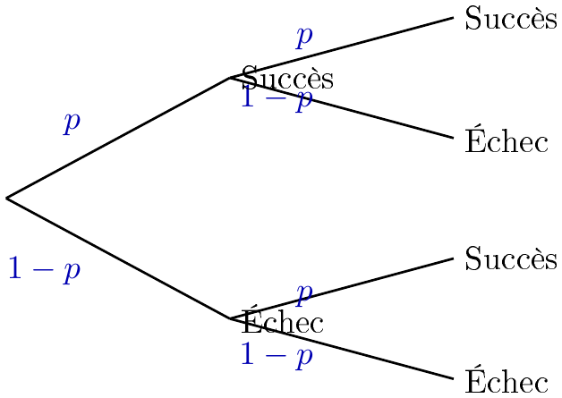
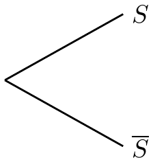
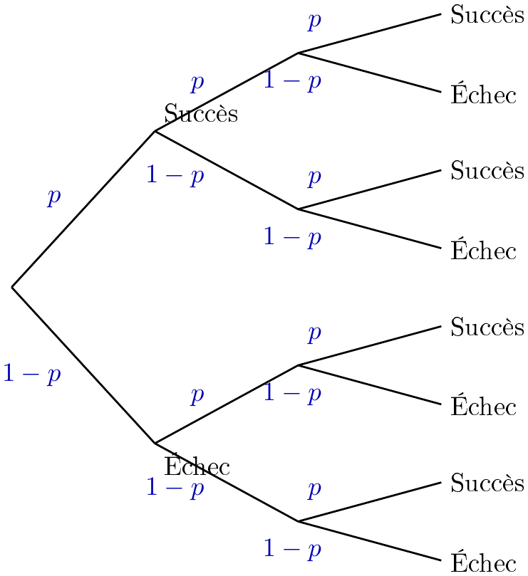

Chapitre VIII : Probabilité, variable aléatoire
Première STMG · Chapitre 8 — Probabilité et variable aléatoire · cours de Frederik de Peyrelongue
I. Expérience aléatoire
On appelle expérience aléatoire une expérience dont on ne connaît pas à l'avance l'issue possible, mais dont on connaît toutes les issues possibles.
Soit l'expérience aléatoire : « On lance un dé à six faces et on regarde le résultat. »
L'ensemble de toutes les issues possibles $\Omega=\{1\,;2\,;3\,;4\,;5\,;6\}$ s'appelle l'univers des possibles.
On considère l'événement $A$ : « On obtient un résultat pair. »
On a donc : $A=\{2\,;4\,;6\}$.
On considère l'événement élémentaire $E$ : « On obtient un 3 ».
On a donc : $E=\{3\}$.
Arbre de probabilité
Expérience aléatoire : on lance un dé classique à six faces et on regarde si on obtient « 6 ». On répète cette épreuve $2$ fois de suite : les épreuves sont indépendantes les unes des autres.
On note Succès : « l'événement avoir un 6 ».
On peut modéliser une expérience aléatoire à l'aide d'un arbre qui représente toutes les issues possibles :
- on associe une notation à chaque issue ;
- on trace les branches de la première épreuve ;
- à partir de chaque première issue, on trace les nouvelles branches de la deuxième épreuve, etc. ;
- on ajoute les probabilités des issues sur chaque branche (on obtient un arbre pondéré).

Un arbre de probabilité est dit pondéré si chaque issue est représentée par une unique branche sur laquelle on note la probabilité correspondante.
On dit que deux épreuves sont indépendantes lorsque les résultats de l'une n'influencent pas la probabilité des résultats de l'autre.
Calcul des probabilités à partir de l'arbre pondéré
Dans un arbre pondéré représentant des épreuves indépendantes, la probabilité d'une issue est le produit des probabilités du chemin qui mène à cette issue.
On lance deux fois le dé, et on considère l'événement $A$ « obtenir deux fois le 6 » :
La probabilité de l'événement $B$ « obtenir d'abord un 6 puis, sur le deuxième tirage, ne pas obtenir un 6 » est
On dit qu'une issue est favorable à un événement si cette issue est contenue dans l'événement.
La probabilité d'un événement est la somme des probabilités des issues favorables à cet événement.
On s'intéresse à l'événement $D$ : « obtenir uniquement, sur les deux tirages, un seul 6 ».
Il y a deux possibilités sur l'arbre : $S$ puis $E$, ou bien $E$ puis $S$.
II. Variable aléatoire et loi de probabilité
Une variable aléatoire $X$ est une fonction définie sur un univers $\Omega$ et à valeurs dans $\R$.
Si $x_{1}$, $x_{2}$, …, $x_{r}$ désignent les valeurs prises par $X$, on note « $X=x_{i}$ » l'événement « $X$ prend la valeur $x_{i}$ ».
Dans l'expérience précédente, on considère le jeu suivant :
- si le résultat est pair, on gagne $2$ euros ;
- si le résultat est $1$, on gagne $3$ euros ;
- si le résultat est $3$ ou $5$, on perd $4$ euros.
On a défini une variable aléatoire $X$ sur $\Omega=\{1\,;2\,;3\,;4\,;5\,;6\}$ qui peut prendre les valeurs $2$, $3$ ou $-4$.
On a donc : $X(1)=3$, $X(2)=2$, $X(3)=-4$, $X(4)=2$, $X(5)=-4$, $X(6)=2$.
Soit une variable aléatoire $X$ définie sur un univers $\Omega$ et prenant les valeurs $x_{1}$, $x_{2}$, …, $x_{n}$.
La loi de probabilité de $X$ associe à toute valeur $x_{i}$ la probabilité $\prob(X=x_{i})$.
On considère la variable aléatoire $X$ définie dans l'exemple précédent.
Chaque issue du lancer de dé est équiprobable et égale à $\frac{1}{6}$.
La probabilité que la variable aléatoire prenne la valeur $2$ est égale à
On note : $\prob(X=2)=\frac{1}{2}$. De même : $\prob(X=3)=\frac{1}{6}$ et $\prob(X=-4)=\frac{1}{6}+\frac{1}{6}=\frac{1}{3}$.
On peut résumer les résultats dans un tableau :
| $x_{i}$ | $-4$ | $2$ | $3$ |
| $\prob(X=x_{i})$ | $\dfrac{1}{3}$ | $\dfrac{1}{2}$ | $\dfrac{1}{6}$ |
Ce tableau résume la loi de probabilité de la variable aléatoire $X$.
La somme de toutes les probabilités $\prob(X=x_{i})$ doit toujours être égale à $1$.
Dans l'exemple traité plus haut :
III. Espérance d'une variable aléatoire
Espérance
Soit une variable aléatoire $X$ définie sur un univers $\Omega$ et prenant les valeurs $x_{1}$, $x_{2}$, …, $x_{n}$.
La loi de probabilité de $X$ associe à toute valeur $x_{i}$ la probabilité $p_{i}=\prob(X=x_{i})$.
L'espérance mathématique de la loi de probabilité de $X$ est :
Il s'agit de l'espérance de gain du jeu, c'est-à-dire qu'en moyenne, sur un grand nombre de parties, le joueur gagne environ $0{,}17$ euro.
Remarques :
- on parlera d'un jeu équilibré ou équitable si l'espérance de gain est nulle ;
- l'espérance est la moyenne de la série des $x_{i}$ pondérés par les probabilités $p_{i}$.
IV. Schéma de Bernoulli
Épreuve de Bernoulli
Une épreuve de Bernoulli est une expérience aléatoire qui ne comporte que deux issues (succès ou échec). Si le succès, noté $S$, a une probabilité $p$, alors l'échec, noté $\overline{S}$, a une probabilité $1-p$.

Pile ou face : épreuve de Bernoulli avec $p=0{,}5$.
Tirer un dé à six faces : « si je considère les 6 faces, ce n'est pas une épreuve de Bernoulli ».
« Si je considère uniquement le résultat obtenu : 6 ou pas », c'est une épreuve de Bernoulli avec $p=\frac{1}{6}$ et $1-p=\frac{5}{6}$.
« Lors d'un examen, un candidat doit répondre à un QCM où une seule réponse est correcte parmi les 4 proposées. Il répond au hasard. »
Ceci est une épreuve de Bernoulli, car elle ne comporte que deux issues :
- le succès (= choisir la bonne réponse) avec une probabilité $p=0{,}25$ ;
- l'échec (= choisir une mauvaise réponse) avec une probabilité de $0{,}75$.
Schéma de Bernoulli et arbre pondéré
Lorsqu'on répète plusieurs fois et de manière indépendante la même épreuve de Bernoulli, on dit que l'on a un schéma de Bernoulli.

Une chaîne de production fabrique chaque jour $10\,000$ pneus, dont $90\,\%$ sont jugés sans défaut.
On extrait au hasard $3$ pneus de la chaîne.
La quantité de pneus produite est suffisamment importante pour que l'on considère le prélèvement comme étant avec remise.
a/ Justifier que ce tirage correspond à un schéma de Bernoulli.
On a une épreuve de Bernoulli : « piocher au hasard un pneu, il est conforme », répétée $3$ fois de manière indépendante, avec $p=0{,}9$ et $1-p=0{,}1$.
b/ Représenter cette situation par un arbre pondéré.
c/ Calculer la probabilité d'avoir $3$ pneus sans défaut.
$X$ est la variable aléatoire qui compte l'absence de défaut :
d/ Calculer la probabilité d'avoir exactement $1$ pneu sans défaut.
« $1$ pneu sans défaut » : $\{X=1\}$.
e/ Calculer la probabilité d'avoir au moins un pneu sans défaut.
« au moins un pneu sans défaut » : $\{X\geqslant 1\}$.
On peut aussi écrire :